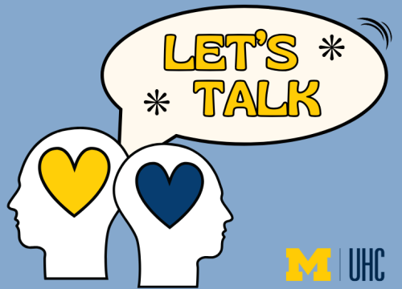

Let's Talk
It's a free program that supports students starting their mental health journeys. Students can schedule casual meetings with counselors during specific drop-in times. Click me
Counseling and Psychological Services (CAPS) offers counseling services to all UMSI students. At CAPS, we are dedicated to creating an inclusive environment rooted in our values of multiculturalism, multidisciplinary collaboration, and diverse theoretical approaches. This commitment ensures that UMSI students can access great services and have positive mental health outcomes. We offer both in-person and virtual services. If you have any concerns about your mental health, don't hestitate to seek help from CAPS. There are plenty of ways to address your concerns through CAPS. If you have any questions, please feel free to contact the front desk at (734) 764-8312.
It's a free program that supports students starting their mental health journeys. Students can schedule casual meetings with counselors during specific drop-in times. Click me

Individual Peer Counseling is designed to offer a new way to meet the needs of students. Students can get support of their mental health and have a place to vent. Click me
Students can reach out to a therapist of their choice via video, phone, chat or messaging. Teletherapy services are available during the day, as well as evenings, weekends, and holidays. This service is offered at no cost to all UMSI students. Click me